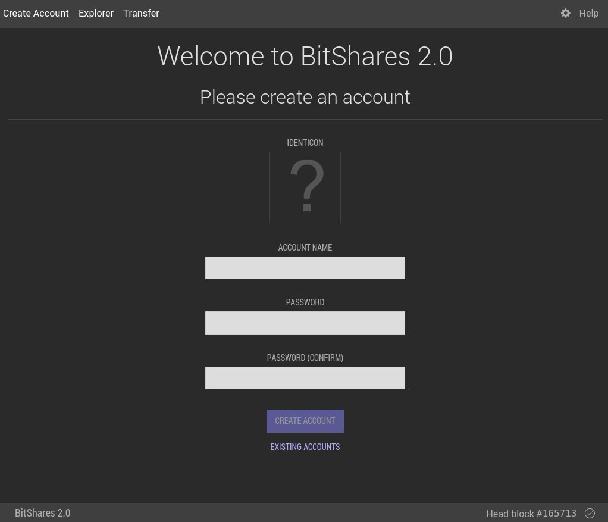

Register
Как зарегистрироваться
Данный туториал пошагово продемонстрирует Вам процесс регистрации полностью функционального аккаунта на блокчейне BitShares.
Шаг 1 - Загрузка программного обеспечения
Первым шагом будет загрузка и установка клиента BitShares.
BitShares 2 ( 28 марта 2016 / графический интерфейс - 15 февраля 2017)
-
Windows
sha1: 33172dcbf045b47ebcb184bfab5168bada613426
sha256: a724cbfb264c229b481a6259213edeabd1a4e3b2ee7d10b2d63057c707345103
-
Mac
sha1: e4af05b22782c8cb8697730e1cfbd070c9ef9719
sha256: 46d260bd7e9b574812aef14268448bac9fa5ea8e3a92c383953a58fc1e742ce1
-
Linux
sha1: 2fcd8e980064c2d816309d87024ca9f7b877a9f7
sha256: 73bd9c4217c3b3163996ddc4037b32336641a5414029cd4e65d95111de1fdff6
Последний официальный релиз всегда можно найти на GitHub по следующему адресу: https://github.com/bitshares/bitshares-2/releases/latest
После того, как Вы загрузили последнюю версию для Вашего компьютера и установили приложение BitShares, запустите его и примите лицензионное соглашение. Затем Вы увидите экран, где Вас попросят задать пароль для Вашего кошелька.

Пароль будет использоваться для защиты Вашего кошелька, который содержит Ваши приватные ключи, тогда как хранятся они на Вашем компьютере. Убедитесь, что Вы выбрали достаточно сильный пароль, который не используется где-либо еще.
Примечание: Не думайте, что если Вы запомнили свой пароль, то сможете восстановить Ваши средства с другого компьютера, на котором тоже установлен клиент BitShares. Мы расскажем Вам о процессе создания резервной копии Вашего кошелька в последующих пунктах.
Шаг 2 - Создание аккаунта
Следующим шагом будет создание аккаунта, где Вы увидите экран, подобный изображенному ниже:
Как только Вы выбрали имя аккаунта, которое Вас устраивает, нажмите кнопку “Создать Новый Аккаунт”.
Примечание: Аккаунт - это именной публичный ключ, который позволяет Вам получать средства, логиниться на веб-сайтах и подписывать сообщения. Кошелек может содержать один или более аккаунтов, что означает, что Вы можете создать несколько аккаунтов со своего кошелька, так что не нужно чересчур усердно подбирать идеальное имя.
После того, как Вы нажмете “Создать Новый Аккаунт”, Вы будете зарегистрированы автоматически, как показано ниже:
Шаг 3 - Создание резервной копии кошелька
Лучше всего будет, если Вы создадите резервную копию Вашего кошелька прямо сейчас. Чтобы это сделать, воспользуйтесь панелью управления кошелька, как показано ниже:

Ваш пароль используется для защиты Вашего кошелька, который содержит Ваши приватные ключи, тогда как хранятся они на Вашем компьютере. Убедитесь, что Вы выбрали достаточно сильный пароль, который не используется где-либо еще.
Введите пароль, который Вы задали при создании своего аккаунта:
После этого приложение BitShares попросит Вас утвердить так называемый brain key, который будет использоваться для восстановления всех Ваших аккаунтов, созданных в Вашем кошельке.
Запишите свой brain key и храните его в безопасном месте. Он дает доступ к Вашим аккаунтам и средствам без дальнейших запросов! После этого, нажмите “Далее” и подтвердите, что Вы записали свой brain key правильно:
Примечание: Для восстановления Ваших балансов Вам нужно сделать это только один раз, но мы рекомендуем Вам делать это периодически, чтобы избежать потери истории Ваших транзакций.